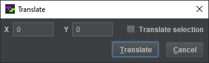

© 2023 meatfighter.com
This work is licensed under CC BY-SA 4.0


Contents > Applications > TetrominoScript Editor
The Translate dialog, shown below, offsets the coordinates of selected or all TS program instructions by specified values.
Select to open it.

Here are descriptions of its components:
horizontally translates the entire TS program such that the y-axis passes through the middle of the resultant circuit.
© 2023 meatfighter.com |